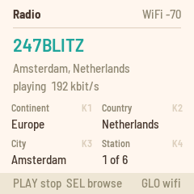
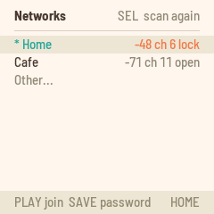
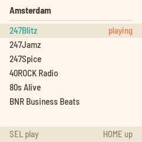
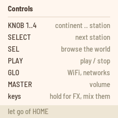
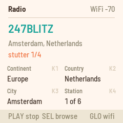
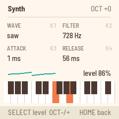

Radio
Radio turns the M-VAVE FM-1 into a pocket internet radio. It joins a 2.4 GHz WiFi network and plays stations from around the world from Radio Garden's map, MP3 and AAC (HE-AAC included). The white keys are punch-in effects, ARP turns the keys into a small synth over the radio, SAVE keeps your favorite stations, and over USB the FM-1 is a sound card you can record from.

1Install
Try it first: the Radio emulator runs the same code in the browser: the stations play, with the effects on the keys, through Radio's own decoders.
Install: open the web installer in Chrome or Edge, connect the FM-1 with a USB data cable and press Install. Don't unplug it while it's writing; when it finishes, the FM-1 restarts into Radio.
Go back: "Back to the stock firmware", at the bottom of the same page, puts M-VAVE's firmware back.
Installing other firmware is at your own risk. If the FM-1 ever won't start, hold REC while you switch it on: it starts in update mode, and the installer page can write a firmware again.
Install from the command line
Download the firmware file (radio-VERSION.fwsc) from the releases page, get the Radio source from GitHub, install Python 3 with pip3 install mido python-rtmidi, and run:
python3 base/tools/fm1_install.py radio-VERSION.fwsc2Join a network
The FM-1 joins 2.4 GHz networks only, open or WPA2 with a password. It can't see 5 GHz networks: if your router has one name for both bands, it will still find the 2.4 GHz one.
With no network saved, the FM-1 starts on the list of networks around it, already scanning: turn SELECT to yours and press PLAY, then type its password (steps 4 and 5 below).

- Press GLO for the WiFi page.
- Press PLAY to turn WiFi on, then SEL to see the networks around you. SEL again scans again.
- Turn SELECT to a network. Each shows its signal (-50 is strong, -80 is weak), its channel, and "lock" if it needs a password.
- For an open network or one you've saved, press PLAY to join. Otherwise press SAVE to type its password.
- Type the password on the keys and press PLAY to save it and join. HOME cancels.
A hidden network: choose Other... (at the top while it scans, at the bottom after), type the network's name and press PLAY, then its password (none for an open network) and PLAY again.
Typing: the keys type left to right, every key in turn, black ones too: the first 26 are a to z, and the last key deletes. Hold OCT− and press a key for a capital; hold OCT+ for the digits 0 to 9 and then space ! @ # $ % & * - _ . , ? + / :. The screen shows a small keyboard with what each key types.
Saved networks: the FM-1 keeps six, the most recent first. With networks saved, it turns WiFi on at start, scans, and joins the strongest saved network it hears; hearing none, it tries each saved one in turn, and tries again shortly. To forget one, from a computer: python3 base/tools/fm1_remote.py wifi saved lists them, wifi forget N forgets the one at N (0 is the first).
The FM-1 always joins with the same address (made from its flash chip's factory ID), so your router sees it as one device, through updates and other firmwares.
3Listening
| Control | What it does |
|---|---|
| PLAY | Play or stop. |
| KNOB 1 | Continent. |
| KNOB 2 | Country. |
| KNOB 3 | Place: a city or town, A to Z. |
| KNOB 4 or SELECT | Station in the place. |
| MASTER | Volume. |
| FX | Tap tempo for the effects. |
| SEL | Browse the list of continents, countries, places and stations. |
| SAVE | Favorites. |
| ARP | The synth. |
| GLO | The WiFi page, and back. |
| Hold HOME | The controls, on the screen. |
The knobs work as a dial: turn them, and the radio tunes once you stop. A new place takes a second or two: the FM-1 asks Radio Garden for its stations (up to 100, as Radio Garden orders them) and plays the first. The screen shows the station, its place and country, and whether it is playing or buffering. A station that drops out is reconnected by itself.

In the browser, turn SELECT to move, press SEL to open a place or to play a station, and press HOME to go up a level.
The FM-1 plays MP3 and AAC streams, HE-AAC ("AAC+") included; an HE-AAC v2 stream plays in mono. A few stations can't play at all (HLS, AAC in an MP4 container, Ogg), and some are offline. The screen says so ("can't play HLS", "station offline"): turn KNOB 4 to the next one.
The FM-1 remembers the station and whether it was playing, and picks up there at the next start.

4Favorites
Press SAVE for your favorites, up to 16. The list's top row adds the station playing. Turn SELECT to move, press SEL to play a favorite, and REC to delete it. HOME (or SAVE) goes back.
The favorites are kept in the FM-1's flash, apart from everything else. Another firmware that uses the same flash (LOOM-8's samples, for one) erases them.
5Punch-in effects
While the radio plays, the 16 white keys light up. Hold a white key for its effect, and let go to stop it. Hold several to mix them. The screen shows what is held, and a held key's light goes out.
| White key | Effect |
|---|---|
| 1 | Low-pass filter |
| 2 | High-pass filter |
| 3 | Telephone: a narrow, driven band |
| 4 | Bitcrush |
| 5 | Stutter, 1/8: repeats the last eighth note |
| 6 | Stutter, 1/16 |
| 7 | Stutter, 1/32 |
| 8 | Stutter, 1/64 |
| 9 | Tape stop |
| 10 | Reverse |
| 11 | Chop, 1/8: open for the first half of each eighth note, from your press |
| 12 | Chop, 1/16 |
| 13 | Ring modulator |
| 14 | Half speed |
| 15 | Mute |
| 16 | Lo-fi |

The stutters, tape stop, reverse and half speed play back the last quarter second, in mono. Only one of them plays at a time: with two held, the lower key wins. The filters, crushers, ring modulator, chops and mute work on top of them.
Tap tempo. The stutters and chops follow a tempo, 120 BPM at start. Tap FX on Home in time with the music to set it: the last four taps count, and a pause of two seconds starts a new count. The screen shows the tempo for two seconds, and the FX light flashes on the beat. Below about 108 BPM the 1/8 stutter plays a 1/16 instead (the history holds about a quarter second).
6The synth
Press ARP to play the keys: a 4-voice synth over whatever the radio plays, or on its own.

| Control | What it does |
|---|---|
| KNOB 1 | The wave: sine, triangle, saw, square, and everything between. |
| KNOB 2 | Filter: a low-pass, 80 Hz to 12 kHz. |
| KNOB 3 | Attack: 1 ms to 2 s. |
| KNOB 4 | Release: 5 ms to 3 s. |
| SELECT | The synth's level against the radio. |
| OCT- / OCT+ | Octaves, two each way. |
| HOME or ARP | Back to the radio (the keys are the effects again). |
Its settings are kept, a few seconds after a change.
7Recording over USB
Plugged into a computer, the FM-1 is also a USB sound card, "RADIO FM-1" (stereo, 44.1 kHz). Choose it as the input in any audio app to record the radio, the effects and the synth as you hear them (after MASTER).
8Troubleshooting
It can't find my network, or keeps dropping it. The FM-1's antenna is small: where a phone shows full bars, the FM-1 may see -75 or less, and below about -80 it struggles. Move it nearer the router, or check that the router's 2.4 GHz band is on. A phone's hotspot works well as a test.
A station won't play. Some stations are offline or use a format the FM-1 can't play (see Listening): turn KNOB 4 to the next.
"Report a problem". If the FM-1 crashes, or won't stay on your WiFi, connect it by USB and open the installer page: "Report a problem" reads its crash record and log, ready to copy into an issue on GitHub. Don't switch the FM-1 off first: the record survives a restart, not switching off.
9Known limits
- 2.4 GHz WiFi only, open or WPA2 with a password.
- MP3 and AAC streams; HE-AAC v2 plays in mono, and HLS, MP4 and Ogg streams don't play.
- A place shows up to 100 stations.
- Server certificates aren't checked: the connection to a station or to Radio Garden is encrypted, but not verified.
Radio is open source (MPL-2.0), built on fm1-base and felucca-bsp, from Felucca by Leo Kuroshita (Hügelton Instruments). The stations and the map are Radio Garden's. Radio Garden isn't affiliated with Radio. M-VAVE and FM-1 are trademarks of their owners; Radio is not affiliated with M-VAVE.